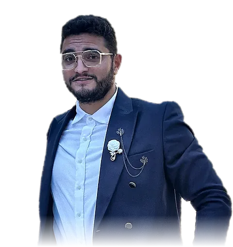

📍 Tunis, Tunisia · Open to opportunities
Wael Halila

.NET 8SQL ServerAzure DevOpsLLM × HEAT01 — About
Engineer across data, .NET, DevOps & AI
With 4+ years in financial services, I work on critical platforms for Asset Management, ESG, Private Equity and Private Banking. I cover the whole data lifecycle, from integration (SSIS, Talend, Control-M) to reporting, on solid SQL Server, C# and .NET 8 foundations, and I keep delivery reliable with Azure DevOps pipelines and observability.
On Ivanti HEAT I built an AI assistant from scratch around an LLM, with natural-language search and querying, and test it end to end with Playwright. I'm also training in generative AI engineering and hold the ITIL® 5 Foundation certificate. 🤖
- Based in
- Tunis, Tunisia 🇹🇳
- Current role
- Engineer, ODDO BHF (since Sep 2022)
- Degree
- Software engineering, ESPRIT
- Languages
- Arabic · English · French · German
02 — Experience
Where I've worked
🏢 ODDO BHF, Tunis. Switch the lens at the top to re-read it for each profile.
03 — AI engineering
AI on Ivanti HEAT
Search, querying and testing, powered by generative AI. 🤖
Overview only: the real architecture details stay with the project. 🔒
04 — Skills
Skills periodic table
Tap an element. Tiles fade when they matter less for the selected lens. 🧪
05 — Projects
Things I've delivered
Most relevant to your lens first. ⭐
Beyond work: 🚁 drone telemetry analyzer (Python, DroneKit) · 🎮 interactive TikTok LIVE overlay (JavaScript) · 🛡️ Securinets INSAT, ethical-hacking community
06 — Credentials
Certified & always learning
07 — Contact
Let's talk
Hiring for a data, .NET, DevOps or AI role? I'd love to hear about it. ✉️